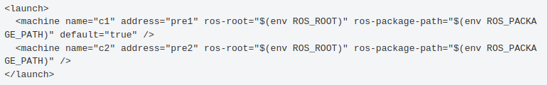
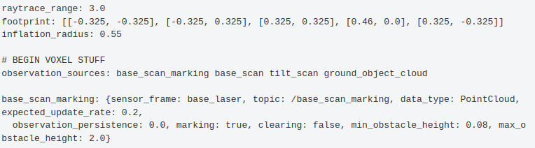
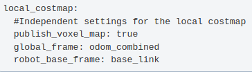
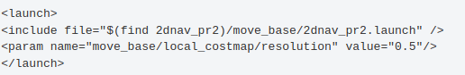
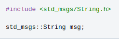
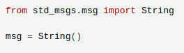
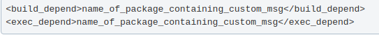

nano src/foobar/package.xml
Внутри foobar/package.xml поместите следующее:

Существует инструмент для создания ROS-пакетов (catkin_create_pkg), но, как вы увидите, на самом деле здесь нет ничего сложного. catkin_create_pkg предотвращает ошибки и экономит усилия, но пакеты - это всего лишь каталог и простой XML-файл.
Теперь мы создадим новый пакет foobar. В этом руководстве предполагается, что мы работаем с вашим рабочим пространством catkin и что поиск установочного файла уже выполнен.
В каталоге catkin_ws:
mkdir -p src/foobar
cd src/foobar
В данный момент src/foobar пустой. Самое первое, что мы сделаем, это добавим наш файл манифеста. Файл package.xml позволяет таким инструментам, как rospack, определять информацию о том, от чего зависит ваш пакет.
nano src/foobar/package.xml
Внутри foobar/package.xml поместите следующее:
Теперь, когда у вашего пакета есть манифест, ROS может найти его. Попробуйте выполнить команду:
rospack find foobar
Если все верно, то выдаст путь к пакету.
Обратите внимание, что этот пакет теперь также имеет зависимости от roscpp и std_msgs. Такие зависимости используются catkin для настройки пакетов в правильном порядке.
Теперь нам нужен файл CMakeLists.txt, чтобы catkin_make, который использует CMake для большей гибкости при сборке на нескольких платформах, собрал пакет.
В данный момент его нет. Создадим и редактируем в моём любимом редакторе из каталога catkin_ws:
nano src/foobar/CMakeLists.txt
cmake_minimum_required(VERSION 2.8.3) project(foobar) find_package(catkin REQUIRED roscpp std_msgs) catkin_package()
Это все, что вам нужно, чтобы начать создавать пакет в ROS с помощью catkin. Конечно, если вы хотите, чтобы он действительно начал что-то создавать, вам нужно будет изучить еще пару макросов CMake. Дополнительную информацию смотрите в нашем руководстве CMakeLists.txt. Также всегда возвращайтесь к руководству для начинающих (создание пакета и т.д.), чтобы настроить свои package.xml и CMakeLists.txt.
Пакетам ROS иногда требуются внешние библиотеки и инструменты, которые должны предоставляться операционной системой. Эти необходимые библиотеки и инструменты обычно называются системными зависимостями. В некоторых случаях эти системные зависимости не устанавливаются по умолчанию. ROS предоставляет простой инструмент rosdep, который используется для загрузки и установки системных зависимостей.
Пакеты ROS должны указывать, что им нужны эти системные зависимости, в манифесте пакета. Давайте посмотрим на манифест для пакета turtlesim:
Сначало:
roscd turtlesim
cat package.xml

Внутри тегов build_depend можно видеть требуемые библиотеки пакеты для ноды (пакета) turtlesim.
rosdep - это инструмент, который вы можете использовать для установки системных зависимостей, требуемых пакетами ROS.
Общий синтаксис:
rosdep install [package]
Загрузим и установим системные зависимости для turtlesim:
rosdep install turtlesim

Хотя rosdep является клиентским инструментом, ссылка предоставляется правилами rosdep, которые хранятся онлайн в ros/rosdistro/rosdep на github.
Когда выполняем:
rosdep update
rosdep фактически извлекает правила из репозитория rosdistro на github.
начиная с версии 0.14.0, обновление rosdep будет извлекать имена пакетов ROS только для дистрибутивов ROS, отличных от EOL. Если вы все еще используете дистрибутив EOL ROS (чего, вероятно, не следует делать), вы можете передать аргумент --include-eol-distros, чтобы также получить имена этих пакетов ROS.
Эти правила используются, когда в списке указана зависимость, которая не соответствует имени пакета ROS, созданного в buildfarm. Затем rosdep проверяет, существует ли правило для ее устранения для соответствующей платформы и используемого менеджера пакетов.
При создании нового пакета вам может потребоваться объявить новые системные зависимости в соответствии с правилами rosdep, если их там еще нет. Просто отредактируйте файл, добавьте необходимую зависимость (строго в алфавитном порядке и по структуре, аналогичной другим уже зарегистрированным зависимостям) и отправьте запрос на извлечение.
После того, как этот запрос на извлечение был объединен, вам нужно запустить :
rosdep update
и теперь эта зависимость будет устранена rosdep.
Можно протестировать это:
rosdep resolve my_dependency_name
В этом руководстве описаны некоторые советы по написанию файлов roslaunch для крупных проектов. Основное внимание уделяется тому, как структурировать файлы запуска, чтобы их можно было максимально часто использовать повторно в различных ситуациях. В качестве примера мы будем использовать пакет 2d nav_pr2.
Большие приложения на роботе обычно включают в себя несколько взаимосвязанных узлов, каждый из которых имеет множество параметров. Хорошим примером является 2d-навигация. Приложение 2dnav_pr2 состоит из самого узла move_base, локализации, фильтрации на плоскости, базового контроллера и картографического сервера. В совокупности существует также несколько сотен параметров ROS, которые влияют на работу этих узлов. И, наконец, существуют ограничения, такие как тот факт, что для повышения эффективности фильтрация в плоскости заземления должна выполняться на том же оборудовании, что и наклонный лазер.
Файл roslaunch позволяет нам сказать все это. При запущенном роботе запуск файла 2dnav_pr2.launch в пакете 2dnav_pr2 откроет все, что требуется роботу для навигации. В этом руководстве мы рассмотрим этот файл запуска и различные используемые функции.
Мы также хотели бы, чтобы файлы roslaunch можно было использовать повторно, насколько это возможно. В этом случае перемещение между физически идентичными роботами можно выполнять вообще без изменения файлов запуска. Даже такое изменение, как переход от робота к симулятору, может быть выполнено всего с несколькими изменениями. Мы рассмотрим, как структурирован файл запуска, чтобы сделать это возможным.
Файл запуска верхнего уровня: rospack find 2dnav_pr2/move_base/2dnav_pr2.launch
У меня не установлен пакет 2dnav_pr2и вообще согласно https://robotics.stackexchange.com/questions/64212/rospack-2dnav-pr2 пакет называется pr2_2dnav, но поддерживается, последняя версия indigo
Этот файл содержит набор других файлов. Каждый из этих включенных файлов содержит узлы и параметры (и, возможно, вложенные включения), относящиеся к одной части системы, такой как локализация, обработка данных с датчиков и планирование траектории.
Совет по дизайну: Файлы запуска верхнего уровня должны быть короткими и состоять из ссылок на другие файлы, соответствующие подкомпонентам приложения, и часто изменяемых параметров ROS.
Как мы увидим позже, это упрощает замену одной части системы.
Чтобы запустить это на роботе PR2, требуется запустить ядро, затем запустить файл запуска для конкретного робота, такой как pre.launch в пакете pr2_alpha, а затем запустить 2dnav_pr2.launch. Мы могли бы включить сюда файл запуска робота, а не требовать, чтобы он запускался отдельно. Это привело бы к следующим компромиссам:
ПЛЮСЫ: Нам пришлось бы сделать на один шаг меньше "открыть новый терминал, запустить заново".
Минусы: запуск файла запуска робота инициирует фазу калибровки, которая длится около минуты. Если бы файл запуска 2dnav_pr2 включал файл запуска робота, каждый раз, когда мы отключали roslaunch (с помощью control-c) и запускали его снова, калибровка происходила бы снова.
МИНУСЫ: Некоторые навигационные узлы 2d требуют, чтобы калибровка была завершена до их запуска. Roslaunch намеренно не обеспечивает никакого контроля за порядком или временем запуска узлов. Идеальным решением было бы обеспечить корректную работу узлов, дождавшись завершения калибровки, но в ожидании этого, поместив данные в два файла запуска, мы можем запустить робота, дождаться завершения калибровки, а затем запустить 2dnav.
Таким образом, не существует универсального ответа на вопрос, следует ли разбивать содержимое на несколько файлов запуска. В данном случае было решено использовать два разных файла запуска.
Совет по дизайну: Помните о компромиссах при принятии решения о том, сколько файлов запуска верхнего уровня требуется вашему приложению.
Сперва ключить тег:
<include file="$(find pr2_alpha)/$(env ROBOT).machine" />
Первое, на что следует обратить внимание в этом файле, - это использование аргумента подстановки env для использования значения переменной среды ROBOT. Например, выполнение:
export ROBOT=pre
до запуска roslaunch это привело бы к включению файла pre.machine.
Совет по разработке: Используйте аргумент подстановки env, чтобы части файла запуска зависели от переменных среды.
Далее давайте рассмотрим пример файла machine: pre.machine в пакете pr2_alpha.

Этот файл устанавливает соответствие между логическими именами компьютеров, в данном случае "c1" и "c2", и фактическими именами хостов, такими как "pre 2". Он даже позволяет управлять пользователем, от имени которого вы входите в систему (при условии, что у вас есть соответствующие учетные данные ssh).
Как только сопоставление определено, его можно использовать при запуске узлов. Например, включенный файл config/new_amcl_node.xml в пакете 2d nav_pr2 содержит строку:
<node pkg="amcl" type="amcl" name="amcl" machine="c1">
Это приводит к запуску узла amcl на компьютере с логическим именем c1 (просмотрев другие файлы запуска, вы увидите, что большая часть обработки лазерного датчика была выполнена на этом компьютере).
При запуске нового робота, скажем, известного как prf, нам просто нужно изменить переменную среды ROBOT. Затем будет загружен соответствующий машинный файл (prf.machine в пакете pr2_alpha). Мы даже можем использовать это для запуска в симуляторе, установив для ROBOT значение sim. Посмотрев на файл sim.machine в пакете pr2_alpha, мы видим, что он просто сопоставляет все логические имена машин с localhost.
Совет по проектированию: Используйте теги компьютера, чтобы сбалансировать нагрузку и контролировать, какие узлы выполняются на одном компьютере, и подумайте о том, чтобы имя файла компьютера зависело от переменной среды для возможности повторного использования.
Этот фрагмент запускает узел move_base. Первым включенным элементом является переназначение. Move_base предназначен для получения одометрии по теме "odom". В случае с pr2 odometry публикуется в разделе pr2_base_odometry, поэтому мы переназначаем его.
Совет по дизайну: Используйте переназначение раздела, когда информация определенного типа публикуется по разным темам в разных ситуациях.
За этим следует набор тегов <param>. Обратите внимание, что эти параметры находятся внутри элемента node (поскольку они находятся перед </node> в конце), поэтому они будут частными параметрами. Например, в первом из них для параметра move_base/controller_frequency устанавливается значение 10,0.
После элементов <param> есть несколько элементов <rosparam>. Они считывают данные параметров в формате yaml, который удобен для чтения человеком и позволяет создавать сложные структуры данных. Вот часть файла costmap_common_params.yaml, загруженного первым элементом <rosparam>: 
Мы видим, что yaml допускает такие вещи, как векторы (для параметра footprint). Он также позволяет помещать некоторые параметры во вложенное пространство имен. Например, для параметра base_scan_marking/sensor_frame установлено значение base_laser. Обратите внимание, что эти пространства имен относятся к собственному пространству имен файла yaml, которое было объявлено как global_costmap с помощью атрибута ns элемента including rosparam. В свою очередь, поскольку этот параметр rosparam был включен элементом node, полное имя параметра будет /move_base/global_costmap/base_scan_marking/sensor_frame.
Следующая строка в move_base.xml это:
<rosparam file="$(find 2dnav_pr2)/config/costmap_common_params.yaml" command="load" ns="local_costmap" />
На самом деле это тот же yaml-файл, что и в строке перед ним. Просто он находится в другом пространстве имен (пространство имен local_costmap предназначено для контроллера траектории, в то время как пространство имен global_costmap влияет на глобальный навигационный планировщик). Это намного удобнее, чем вводить все значения заново.
Следующая строка:
<rosparam file="$(find 2dnav_pr2)/move_base/local_costmap_params.yaml" command="load"/>
В отличие от предыдущих, этот элемент не имеет атрибута ns. Таким образом, пространство имен файла yaml является родительским пространством имен /move_base. Но взгляните на первые несколько строк самого файла yaml:

Таким образом, мы видим, что параметры все-таки находятся в пространстве имен /move_base/local_costmap.
Совет по дизайну: файлы Yaml допускают параметры сложных типов, вложенные пространства имен параметров и повторное использование одних и тех же значений параметров в нескольких местах.
Первое отличие заключается в том, что, поскольку мы знаем, что находимся в симуляторе, мы просто используем файл sim.machine, а не используем аргумент подстановки. Во-вторых, строка:
<include file="$(find 2dnav_pr2)/config/map_server.xml" />
была заменена на
<node name="map_server" pkg="map_server" type="map_server" args="$(find gazebo_worlds)/Media/materials/textures/map3.png 0.1" respawn="true" machine="c1" />
Включенный файл в первом случае просто содержал объявление узла, как и во втором, но с другим файлом карты.
Совет по дизайну: Чтобы изменить "высокоуровневый" аспект приложения, скопируйте файл запуска верхнего уровня и измените нужные части.
Другой вариант - использовать переопределяющее поведение roslaunch: параметры устанавливаются по порядку (после обработки включений). Таким образом, мы могли бы создать дополнительный файл верхнего уровня, который переопределяет

Основным недостатком этого метода является то, что он может усложнить понимание: для определения фактического значения, которое roslaunch устанавливает для параметра, требуется поиск по файлам, включающим roslaunch. Но это позволяет избежать необходимости создавать копии нескольких файлов.
Совет по дизайну: Чтобы изменить глубоко вложенный параметр в дереве файлов запуска, который вы не можете изменить, используйте параметр roslaunch, переопределяющий семантику.
Совет по дизайну: Если вы можете изменить исходный файл запуска, часто предпочтительнее использовать аргументы roslaunch, а не переопределять параметры или копировать файлы roslaunch.
Файлы конфигурации упаковки (включая файлы .launch)
Конфигурационные файлы, пригодные для повторного использования, обычно включаются в пакеты. Затем пользовательское программное обеспечение таких конфигурационных файлов может получить доступ к этим конфигурациям, просмотрев путь, по которому находятся конфигурации, или, что более распространено, используя механизм поиска ресурсов ROS ("rospack find"), так что пользователю не нужно знать путь к конфигурациям. Преимущество последнего заключается в упаковке конфигурационных файлов в "пакет", о котором мы говорим (пакет, совместимый с rosmake/Catkin/Colcon).
В контексте roslaunch значение конфигурационных файлов различно: * .файл запуска: он находится в исполняемом файле roslaunch (или его внутреннем процессе, запущенном через его API), напрямую передается в него и анализируется. * YAML: Путь к файлу может быть передан тегу rosparam, который считывает файл и загружает содержимое на сервер параметров ROS. * Нет встроенной поддержки файлов других типов.
Внутри .launch одна из примечательных функций заключается в том, что путь к другому ресурсу может быть заменен на $(найти pkg).
Practice-A. Отдельные пакеты для .launch и других конфигурационных файлов
В сочетании с этим хорошей практикой упаковки конфигураций является создание отдельных пакетов для .запуска и других типов конфигурационных файлов. Скажем, пакетов YOURPRJ_config и YOURPRJ_launch. Потому что * Есть большая вероятность, что некоторые конфигурации в вашем PRJ_CONFIG pkg содержат ссылки .файлы запуска в вашем PRJ_LAUNCH. Т.е. ваш prj_launch зависит от вашего PRJ_CONFIG. * Допустим, в вашем проекте есть другой пакет, YOURPRJ_calibration package, который предоставляет узлы, использующие конфигурации, хранящиеся в вашем PRJ_CONFIG. У вас также есть файлы запуска для запуска этих узлов.
Если бы и launch, и другие конфигурации были упакованы в один и тот же пакет, скажем, у вашего PRJ_CONFIG_SINGLE возникла бы циклическая зависимость.
запускайте файлы в ссылочных узлах вашего PRJ_CONFIG_SINGLE в вашем PRJ_CALIBRATION.
узлы в вашем Prj_calibration ссылаются на файлы конфигурации в вашем PRJ_CONFIG_SINGLE.
Благодаря тому, что launch и другие конфигурации хранятся в отдельных пакетах, можно избежать циклической зависимости. узлы в вашем Prj_calibration ссылаются на файлы конфигурации в вашем PRJ_CONFIG.
файлы запуска в вашем PRJ_LAUNCH ссылаются на узлы в вашем prj_calibration.
Практика-B. Сгруппируйте множество конфигураций в один пакет или меньшее количество пакетов
В ROS-промышленном фреймворке, где работа с большим количеством, но схожего оборудования является одной из мотиваций, группировка множества конфигураций, включая. .запускать файлы оказалось удобнее. Смотрите соответствующее обсуждение (discourse.ros.org#18443).
В этом руководстве объясняется, как запустить систему ROS с использованием двух компьютеров. В нем объясняется использование ROS_MASTER_URI для настройки нескольких компьютеров на использование одного мастера.
ROS разработан с учетом распределенных вычислений. Хорошо написанный узел не делает никаких предположений о том, в какой части сети он выполняется, позволяя перемещать вычисления во время выполнения в соответствии с доступными ресурсами (существуют исключения; например, узел драйвера, который взаимодействует с частью аппаратного обеспечения, должен выполняться на компьютере, к которому физически подключено оборудование). Развернуть систему ROS на нескольких компьютерах несложно. Помните о следующих моментах:
ssh hal
roscore
ssh hal
export ROS_MASTER_URI=http://hal:11311
rosrun rospy_tutorials listener.py
ssh marvin
export ROS_MASTER_URI=http://hal:11311
rosrun rospy_tutorials talker.py
Вуаля: теперь вы должны увидеть, что прослушиватель в hal получает сообщения от talker в marvin.
Обратите внимание, что последовательность запуска talker / listener не имеет значения; узлы могут запускаться в любом порядке. Единственное требование - перед запуском любых узлов запустить мастер.
Сначала listener на marvin:
ssh marvin
export ROS_MASTER_URI=http://hal:11311
rosrun rospy_tutorials listener.py
Теперь talker на hal:
ssh hal
export ROS_MASTER_URI=http://hal:11311
rosrun rospy_tutorials talker.py
rostopic
Для тестирования вы можете использовать инструмент rostopic на всех компьютерах, подключенных к ядру.
Вы получите список всех доступных тем. Если вы не подключены к ядру, появится сообщение об ошибке.
rostopic list
В беспроводных сетях иногда возникает необходимость проверить, есть ли соединение и продолжают ли приходить сообщения. Для коротких тестов удобно распечатывать сообщения.
rostopic echo /topic_name
Одной из распространенных проблем является отсутствие определения ROS_IP на компьютере, на котором запущен talker.py.
проверьте это с помощью: echo $ROS_IP
Если вы не зададите ROS_IP, то rostopic info действительно покажет правильные соединения издателя и слушателя, но rostopic echo будет пустым. Вы не увидите TX-трафика в локальной сети, на компьютере с talker. Во-первых, после определения ROS_IP с соответствующим IP-адресом (экспортировать ROS_IP=machine_ip_addr) вы увидите трафик по локальной сети, а listener.py отобразит полученные данные.
Создать сообщение очень просто. Просто поместите msg-файл в каталог msg в пакете. Пожалуйста, следуйте предыдущему руководству по созданию msg-файлов (не забудьте выбрать тип системы сборки вверху страницы
Для C++
Сообщения помещаются в пространство имен, которое соответствует имени пакета. т.е.

Для python:

Если вы используете новое пользовательское сообщение, определенное в другом пакете, не забудьте добавить:
в package.xml:

и вам нужно будет добавить это в свой CMakeList.txt:
add_dependencies(your_program ${catkin_EXPORTED_TARGETS})
Если вы создаете узлы на C++, которые используют ваши новые сообщения, вам также нужно будет объявить зависимость между вашим узлом и вашим сообщением, как описано в документации по сборке catkin msg/srv
В руководстве ROS Node Tutorial по Python показан пример ранее описанных руководств по работе с talker и listener, использующих пользовательское сообщение, с реализациями на C++ и Python.